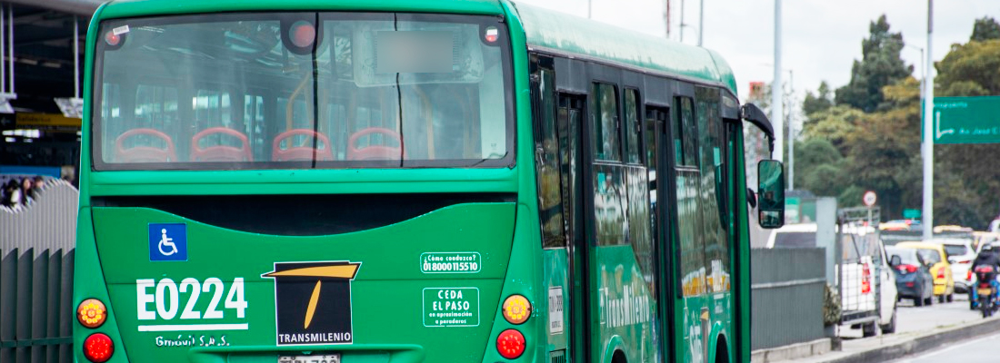

Catalogo De Noticias

TransMi tiene alternativas de viaje para usuarios de estación Tercer Milenio

Metrocable una realidad en San Cristobal

Servicio TransMiZonal 1-7 Quirigua suspende una parada

Abren una nueva estacion de TransMilenio

Sí hay empleo para ser operadores de TransMilenio